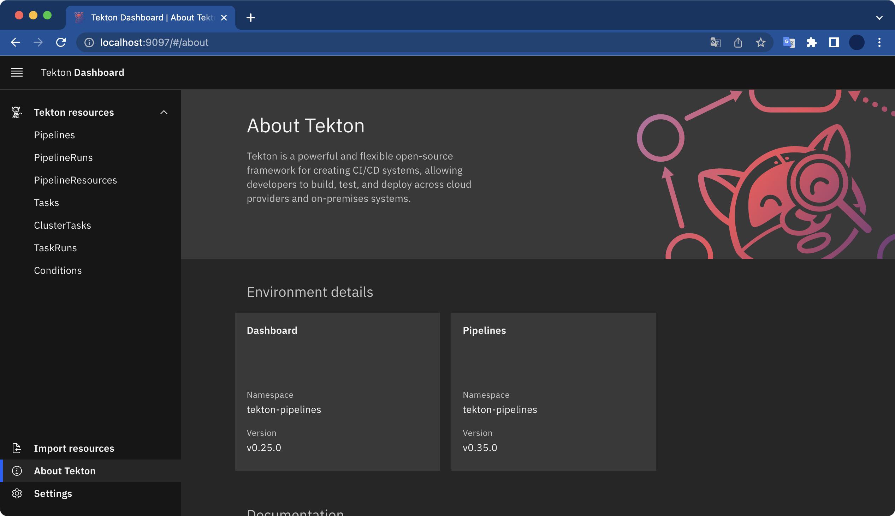

Tekton 설치
개요
minikube를 통해 Tekton Pipeline과 Tekton Dashboard를 설치하고 데모를 구성해본다.
환경
- OS: macOS Monterey 12.3.1
- Shell: zsh
- minikube v1.25.2
- Homebrew 3.4.9
전제조건
- minikube가 미리 설치되어 있어야 한다.
시작하기
1. Task 데모
미니큐브 클러스터를 생성한다.
$ minikube start
😄 Darwin 12.3.1 (arm64) 의 minikube v1.25.2
✨ 자동적으로 docker 드라이버가 선택되었습니다
👍 minikube 클러스터의 minikube 컨트롤 플레인 노드를 시작하는 중
🚜 베이스 이미지를 다운받는 중 ...
💾 쿠버네티스 v1.23.3 을 다운로드 중 ...
> preloaded-images-k8s-v17-v1...: 419.07 MiB / 419.07 MiB 100.00% 2.37 MiB
> gcr.io/k8s-minikube/kicbase: 343.12 MiB / 343.12 MiB 100.00% 1.87 MiB p/
🔥 Creating docker container (CPUs=2, Memory=1988MB) ...
🐳 쿠버네티스 v1.23.3 을 Docker 20.10.12 런타임으로 설치하는 중
▪ kubelet.housekeeping-interval=5m
▪ 인증서 및 키를 생성하는 중 ...
▪ 컨트롤 플레인이 부팅...
▪ RBAC 규칙을 구성하는 중 ...
🔎 Kubernetes 구성 요소를 확인...
▪ Using image gcr.io/k8s-minikube/storage-provisioner:v5
🌟 애드온 활성화 : storage-provisioner, default-storageclass
🏄 끝났습니다! kubectl이 "minikube" 클러스터와 "default" 네임스페이스를 기본적으로 사용하도록 구성되었습니다.
kubectl을 사용하여 클러스터가 성공적으로 생성되었는지 확인할 수 있다.
$ kubectl cluster-info
Kubernetes control plane is running at https://127.0.0.1:57074
CoreDNS is running at https://127.0.0.1:57074/api/v1/namespaces/kube-system/services/kube-dns:dns/proxy
To further debug and diagnose cluster problems, use 'kubectl cluster-info dump'.
tekton pipeline을 설치한다.
$ kubectl apply --filename \
https://storage.googleapis.com/tekton-releases/pipeline/latest/release.yaml
$ kubectl get pod -n tekton-pipelines
NAME READY STATUS RESTARTS AGE
tekton-pipelines-controller-55487dcfb8-vww2f 1/1 Running 0 31s
tekton-pipelines-webhook-794864555f-g9fnm 1/1 Running 0 31s
hello-world.yaml 파일을 아래와 같이 작성한다.
apiVersion: tekton.dev/v1beta1
kind: Task
metadata:
name: hello
spec:
steps:
- name: echo
image: alpine
script: |
#!/bin/sh
echo "Hello World"
작성한 hello-world.yaml 파일을 배포한다.
$ kubectl apply -f hello-world.yaml
task.tekton.dev/hello created
True, Succeeded는 Task가 정상적으로 완료되었다는 의미이다.
$ kubectl get taskrun hello-task-run
NAME SUCCEEDED REASON STARTTIME COMPLETIONTIME
hello-task-run True Succeeded 29s 5s
실행된 Task의 결과(로그)를 확인해본다.
$ kubectl logs --selector=tekton.dev/taskRun=hello-task-run
Hello World
실행한 Task 로그에 Hello World가 출력됐다.
Task가 정상 실행된 걸 확인할 수 있다.
2. Pipeline 데모
두 번째 테스크 생성하고 실행하기
Hello World Task가 이미 있다. 이제 두 번째 Task인 Goodbye World를 만들어본다.
파일명은 goodbye-world.yaml 이다.
apiVersion: tekton.dev/v1beta1
kind: Task
metadata:
name: goodbye
spec:
steps:
- name: goodbye
image: ubuntu
script: |
#!/bin/bash
echo "Goodbye World!"
작성한 goodbye-world.yaml 파일을 배포한다.
$ kubectl apply --filename goodbye-world.yaml
task.tekton.dev/goodbye created
Pipeline 생성
hello-goodbye-pipeline.yaml 파일을 작성한다.
apiVersion: tekton.dev/v1beta1
kind: Pipeline
metadata:
name: hello-goodbye
spec:
tasks:
- name: hello
taskRef:
name: hello
- name: goodbye
runAfter:
- hello
taskRef:
name: goodbye
작성한 파일을 배포한다.
$ kubectl apply --filename hello-goodbye-pipeline.yaml
PipelineRun 개체로 파이프라인을 인스턴스화한다.
hello-goodbye-pipeline-run.yaml이라는 새 파일을 아래와 같이 작성한다.
apiVersion: tekton.dev/v1beta1
kind: PipelineRun
metadata:
name: hello-goodbye-run
spec:
pipelineRef:
name: hello-goodbye
작성한 파일을 배포한다.
$ kubectl apply --filename hello-goodbye-pipeline-run.yaml
pipelinerun.tekton.dev/hello-goodbye-run created
Tekton CLI를 사용해서 hello-goodbye-run Pipelien Run의 로그를 확인한다.
$ tkn pipelinerun logs hello-goodbye-run -f -n default
tektoncd-cli 설치
참고로 tkn 명령어를 사용하려면 tektoncd-cli 설치가 필요하다.
brew 명령어로 tektoncd-cli를 설치할 수 있다.
$ brew install tektoncd-cli
실행된 파이프라인 로그에서 hello task와 goodbye task가 모두 정상 실행된 결과를 확인할 수 있다.
$ tkn pipelinerun logs hello-goodbye-run -f -n default
[hello : echo] Hello World
[goodbye : goodbye] Goodbye World!
3. Tekton Dashboard 설치
Tekton Dashboard는 Tekton을 관리하기 편하게 해주는 Web UI이다.
최신 버전의 Tekton Dashboard를 설치하려면 아래 명령어를 실행한다.
$ kubectl apply --filename https://github.com/tektoncd/dashboard/releases/latest/download/tekton-dashboard-release.yaml
tekton-dashboard-xxx Pod가 새로 생성된 걸 확인할 수 있다.
$ kubectl get pods --namespace tekton-pipelines
NAME READY STATUS RESTARTS AGE
tekton-dashboard-6c66f85968-f42h5 1/1 Running 0 34s
tekton-pipelines-controller-55487dcfb8-vww2f 1/1 Running 0 8m21s
tekton-pipelines-webhook-794864555f-g9fnm 1/1 Running 0 8m21s
Tekton Dashboard에 접속하기 위해 포트를 설정한다.
$ kubectl proxy --port=8080
그 다음 웹 브라우저에서 아래 주소를 입력해 Tekton Dashboard로 접속 가능하다.
http://localhost:8080/api/v1/namespaces/tekton-pipelines/services/tekton-dashboard:http/proxy/#/clustertasks
또는 이 방법도 가능하다.
$ kubectl --namespace tekton-pipelines port-forward svc/tekton-dashboard 9097:9097
위 명령어가 실행된 후 웹 브라우저를 열고 http://localhost:9097로 접속하면 Tekton Dashboard 화면이 나타난다.

끝!